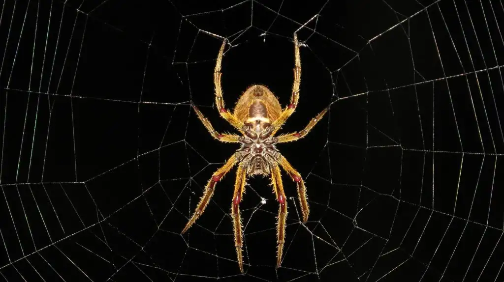

Ende — Jojo y la imaginación.

Un libro de género teatral en la línea de las obras de Ende: una realidad, en este caso muy sórdida, se mezcla con una fantasía sublime. En ella se da un enfrentamiento entre lo luminoso y lo sombrío donde termina triunfando la fantasía frente a las tinieblas. Sin embargo, en esta obra, Ende añade un epílogo muy poco edificante: en la realidad el resultado es el contrario, lo que lo hace todavía más demoledor.
La literatura española, apasionada por el realismo, cae fácilmente en la sordidez. En especial, pienso en Cela, pero hay muchos otros. La pulsión realista de lo que es una fantasía siempre me ha resultado chocante. «La literatura es siempre una impostura», leí en algún lugar, de modo que volcarse en el realismo no deja de ser una alternativa entre otras múltiples. De todas formas siempre hay elementos imaginativos de los que sencillamente no se puede prescindir. Quizá esa es una de las lecciones fundamentales donde esta tensión mejor se muestra en la literatura española, que es el Quijote de Cervantes.
Michael Ende siempre ha sido un escritor de obras infantiles (aunque no exclusivamente, sus cuentos son siempre extraordinarios) así que no tiene que estar sometido a las imposiciones de lo que se suele considerar «literatura adulta». Sin embargo comienza, me temo, a ser un escritor lejano, envejecido, en un negocio editorial que ha extendido la infancia hasta bien entrada a la madurez con obras específicas de género normalmente fantástico y su propia etiqueta de «Young adult».
Quizá el propio Ende sentiría una repulsión por estos planteamientos editoriales puesto que su enfoque de la infancia la fantasía y la imaginación es sumamente peculiar y bien merece una reflexión a escala filosófica de esta «literatura menor».
Porque los elementos ideológicos que Michael Ende defiende en este libro coordinan totalmente con las problemáticas respecto a la imaginación del futuro, cuestión que toda una plétora de autores reivindican en la actualidad como fundamental desde la teoría política o la crítica cultural.
El interior fantástico de la historia transcurre en el País del mañana, del cual el protagonista (Joan) es expulsado a consecuencia de la maquinación de un espejo celoso llamado Kalophain. Este pretende retener a la princesa Eli, que habita en el Castillo de cristal en la cima del mundo, bajo su dominio. Ella escapa en la búsqueda del príncipe y él cae bajo el hechizo de una araña convertida en una hermosa mujer que ha pactado con Kalophain para que el encuentro de los amantes no se dé nunca. La araña Angramain es una criatura fascinante. Próxima a la otra gran araña de la fantasía contemporánea, Ungoliant, pero menos mitológica y más tecnológica. El bufón de Joan hace una precisa descripción de la criatura:
Donde todo marcha sobre ruedas, no más bien sobre hilos!,
un bufón no hace ni deshace.
No pinta nada.
¿Para qué sirve?
Los autómatas no sueltan carcajadas. Donde no existe el fracaso, tampoco existe la risa.
Donde nada falla, el humor no tiene cabida.
La imperfección humana es mi vida, mi muerte la inhumana perfección […]Perfección, sí, a su manera.
A la usanza de la vieja de la guadaña.
El país entero cubrió una telaraña enorme, en silencio, furtivamente.
Ella ocupa el centro.
De ella parten, en ella confluyen miles de hilos entretejidos.
Dondequiera que algo se mueve, lo nota Angramain.
Lo sabe todo, todo lo regula y bajo su férula tiene a todos.
Y la araña, acorazada tras sus férreas escamas, absorbe fuerza y energía
del orden que ella creó.
Corrompidos, sin valor ni voluntad están quienes aún siguen vivos, por obra y gracia de Angramain.
¡Sólo ella hace bailar las marionetas!Pero este baile es una maldición: cual lanzaderas corren sin descanso, de un lado a otro, se entrecruzan laboriosos, y tejen… ¡una gigantesca mortaja! Orden perfecto, sin posible escapatoria: todo está pensado y calculado. La red es irrompible, pues está urdida con miedo. Miedo y astucia conforman el poder de Angramain.
La primera edición es de 1982. Lo inquietante que resultan hoy estás palabras no puede escapar a nadie. Ungoliant solo destruye con su hambre infinita; Angramain planifica, perfecciona, somete, teje, seduce, coordina, corrompe y domina.
Su web es ubicua e ineluctable. Los protagonistas someten a la araña a un engaño, a una contradicción irresoluble, y así la vencen. Sin embargo, esta historia, estos «cuadros» (Ende era hijo de un pintor y de una actriz, ambas artes presentes en la obra a su manera) contrastan con un prólogo y un epílogo en el que se revela la real naturaleza de los protagonistas: él, Jojo, un saltimbanqui aficionado al alcohol, que desaparece intermitente del circo, irresponsable y completamente desfasado, intempestivo, que diría Nietzsche. Ella, una niña «retrasada mental» (hoy en día no se diría así de ningún modo), abandonada en su día y al borde de la muerte, encontrada por el elenco del circo y a la que cuidan con devoción. Van a ser desalojados del solar que okupan por la compañía química que necesita del espacio. Les ofrecen un trabajo, buenas condiciones, pero deben entregar a la niña. Ende llega a insinuar que su enfermedad podría deberse a los residuos de la compañía química. La tentación es muy grande, pero cuando llega el clímax, en el epílogo, todos renuncian a esa proposición de Angramain. Las máquinas se aproximan para sepultar a unos artistas que ya no tienen sitio en el nuevo mañana.
Así de simple. Pero también así de auténtico. La consecuencia en la realidad es que no hay País del mañana.
Para Ende la recuperación imposible pasa por recobrar la imaginación. Ese insidioso mantra que se repite una y otra vez. Berardi lo refleja en sus obras:
El espacio de la imaginación ha sido estrujado por los flujos del imaginario mediado y esto ha llevado a que el espacio de autonomía mental se haya vuelto tan estrecho que apenas podemos elegir en qué pensar, de qué hablar, acerca de qué fantasear.
La autonomía no se basa en odiar al enemigo, sino en amar tu propia vida, en estimar la singularidad que eres. ¿Cuánto amamos nuestras vidas hoy? La continua estimulación infoneuronal de la psicoesfera ha saturado la atención, pero el organismo consciente que eres se percibe a sí mismo sobre la base de la infoestimulación no de la autopercepción. La alegría se nos está escapando porque estamos atrapados en un remolino de excitación permanente.
La imaginación del futuro es tan dependiente del imaginario irradiado por la esfera de medios que el inconsciente colectivo estaba preparado para la implosión.
Después de las rebeliones convulsivas del otoño de 2019, cuando el cuerpo planetario pareció estallar de Santiago a Hong Kong, Barcelona y Quito, el sentimiento de un «sin salida» universal empujó a la mente colectiva a esperar el desmayo como única salida.
Franco Bifo Berardi, El Tercer Inconsciente, pp. 50-51. (Negrita mía).
Es destacable la reflexión que, casi al final de su obra, lleva a cabo Ariane Aviñó en un libro publicado recientemente. Voy a citar in extenso porque vale la pena:
Debemos «deshacernos del hechizo de la abstracción capitalista» (Berardi 2017), para crear una temporalidad en que quepa imaginar y no solo profetizar. Pensemos las condiciones de posibilidad de la imaginación política desde de la constatación de que el capitalismo ha saturado dicha imaginación, y que solamente podremos recuperarla disintiendo de la temporalidad que producimos y reproducimos con una actividad humana que está sobrecodificada, convertida en mero cálculo o programación estratégica. Imaginar pasa, entonces, por habitar la profundidad de un tiempo otro a través de una praxis deseconomizada. Porque, como señaló Bordieu (1999: 277), «la experiencia del tiempo se engendra en la relación entre el habitus y el mundo social, entre unas disposiciones a ser y hacer y las regularidades de un cosmos natural o social. Es decir, el producto fundamental de cualquier sociedad es un tiempo, una temporalidad, porque el tiempo deriva de la praxis. Para Bourdieu (1999: 283), «el tiempo, como pretendía Kant, es, efectivamente, fruto de un acto de elaboración, que, sin embargo, no atañe a la conciencia pensante, sino a las disposiciones y la práctica». Me refiero al tiempo en sentido bergsoniano, para quien no pensamos el tiempo real, sino que lo vivimos (Bergson, 1930). La sociedad capitalista produce un tiempo particular que viene determinado por un marco economizador, y el producto de la sociedad capitalista es fundamentalmente un tiempo cosificado, plano, cristalizador. El capitalismo, con esa cosificación, esa dimensión del tiempo como tiempo cosa, ese tiempo cosificado convierte, en palabras de Marx, al hombre en, a lo sumo, la cristalización del tiempo: el tiempo lo es todo, el hombre no es nada, o a lo sumo, la cristalización del tiempo (Marx, 1987). Exceder este marco es fundamental para reconfigurar las expectativas y hacer desaparecer la profecía autocumplida de la depresión (Berardi, 2017).
Ahora bien, lo que hace profundamente compleja esta sustracción a la temporalidad capitalista es que pasa precisamente por una difícil renuncia. Nuestras turbadas subjetividades contemporáneas están conformadas de acuerdo al capital, y el dispositivo de obediencia por el que nos mantenemos sujetos al capital nos mantiene al mismo tiempo sujetos a nosotros mismos, fieles a nuestra identidad, adictos a nosotros mismos, a nuestro deseo. Pero, como señala Frédéric Gros (2018), la obediencia también es una renuncia, porque sacrifica el sí ético. Es lo que Gros llama «el yo indelegables», que en nada se refiere a un núcleo sólido de identidad, pues la experiencia del yo indelegable es la fusión de la obligación ética con la disidencia cívica, es la experiencia de la imposibilidad de delegar en otros la preocupación por el mundo. Desobedecer consiste, en este contexto, en desobedecerse a sí mismo y, como señala Gros (2018: 153), «lo que nos hace desobedecer es el pensamiento pensante, el trabajo crítico». Pensar, en este sentido preciso, es lo contrario de huir, de escapar, porque pensar no es otra cosa que alojarse, es adoptar la postura de aquel que se queda, contraria a la que nombra Rilke en el poema con el que concluí la introducción (recordemos esa pregunta: «¿Quién nos ha dado la vuelta de tal mane-ra que, hagamos lo que hagamos, siempre tenemos la postura de aquel que se marcha?»). Pensar, en este sentido, es rehabitar.
Ariane Aviñó, Rehabitar. Fundamentos para la vida no capital-ista, pp. 270-271. El capítulo se titula «Deshacer la profecía». (Todas las negritas son mías).
Creo que las tentativas de otro filósofo contemporáneo, Juan Evaristo Valls Boix, tanto en Metafísica de la Pereza como en El Derecho a las Cosas Bellas postulan ese esfuerzo de rehabitar desde una lógica no productiva, no capitalista, donde esa concepción lúdica que al fin y al cabo es la de Ende se refleja por otros medios.
Por supuesto, también es uno de los aspectos más significativos en la obra de ese peculiar autor que es Mark Fisher por su capacidad de vincular las ideas filosóficas a productos culturales (pero las ideas filosóficas también lo son). Realismo Capitalista trata sobre la anulación de la imaginación fuera del capitalismo siguiendo la cita de Jameson «es más fácil imaginar el fin del mundo que el fin del capitalismo»:
El latiguillo recoge con exactitud lo que entiendo por realismo capitalista: la idea muy difundida de que el capitalismo no solo es el único sistema económico viable, sino que es imposible incluso imaginarle una alternativa. Alguna vez, las películas y novelas distópicas imaginaron alternativas de esta índole: representaban desastres y calamidades que servían de pretexto narrativo para la emergencia de formas de vida diferentes. No es lo que ocurre en Children of men. El mundo que proyecta el film, más que una alternativa, parece una extrapolación o exacerbación de nuestro propio mundo.
Mark Fisher, Realismo Capitalista, pág. 22.
Recoge también a Berardi en el artículo «La Lenta Cancelación del Futuro» en Los Fantasmas de mi Vida, en el que aparece ese genial artículo sobre Caretaker. Hay una nube intelectual focalizada en estas cuestiones que, sin embargo, no consiguen frenar el incremento de una irracionalidad creciente, de una violencia cínica sin freno aparente, como muestra el auge del populismo político.
Esa imaginación es la Fantasía de Ende. En aquella historia infantil escrita en 1979, la Nada era la gran amenaza y un niño conseguía lo que todo ser humano desearía desde el origen de los libros: vivir dentro de uno. Como ya he comentado, la literatura infantil también ha sido colonizada por la hiperproducción capitalista a la que quizá el propio Ende colaboró a generar. Quién sabe. «Toda resistencia es inútil», que decía aquel.
Postdata:
El libro está ilustrado por Bartolomé Liarte, autor de numerosas portadas para Cïrculo de Lectores. Su estilo de dibujo, claro y minimalista, encaja perfectamente con el espíritu de la obra.
Publicado originalmente en PortalEdu. Texto e imágenes conservados de la publicación original.